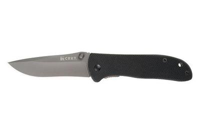
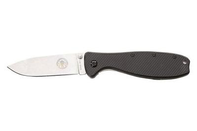
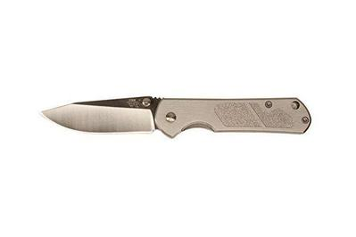
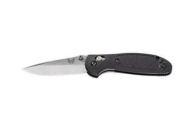
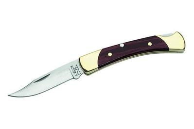

Top 5 best pocket knives of 2023
CRKT Drifter
Features:
The blade is about 3 inches long
You can open and close it with one hand
Smoothness of the blade's pivoting action
Click For More Information About This Knife
Blue Ridge Knives ESEE Zancudo
Features:
Larger handle
Stronger blade lock
Durability and performance
Click For More Information About This Knife
Sanrenmu 710
Features:
Sold for under $20
Overall quality is better than that of many of the $20 to $40 knives
Click For More Information About This Knife
Benchmade Mini Griptilian 556
Features:
Better ergonomic
Fully ambidextrous
Better blade steel
Click For More Information About This Knife
Buck Knives 55
Features:
Textured handle
A timeless feel
durable build quality
Click For More Information About This Knife